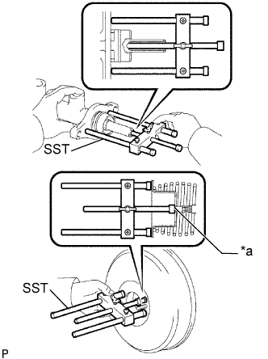
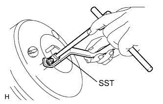

ГЛАВНЫЙ ЦИЛИНДР ТОРМОЗНОЙ СИСТЕМЫ > ПРОВЕРКА |
| 1. ПРОВЕРЬТЕ И ОТРЕГУЛИРУЙТЕ ШТОК УСИЛИТЕЛЯ ТОРМОЗНОЙ СИСТЕМЫ |
|  |
Установите SST на главный цилиндр и опустите шток SST таким образом, чтобы он касался поршня.
Нанесите мелом метку на плоский кончик штока SST. Переверните SST вверх дном и измерьте зазор между штоком усилителя тормозной системы и SST.
| *a | Нанесите мел |
|  |
Если зазор не соответствует номинальному диапазону, отрегулируйте длину, удерживая шток с помощью SST и поворачивая его кончик с помощью торцевого ключа на 7 мм.